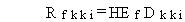
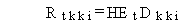

3.1.1 Lifetime Cancer Risk: Health Effects Conversion Factors
The radiation dose calculated for each of the radionuclide
intake and direct radiation exposure pathways are expressed as lifetime
dose (rem) from intake or exposure over the exposure duration for the given
exposure pathway. The risk of cancer from exposure at the lifetime dose
is estimated using health-effects conversion factors. The lifetime fatal
cancer risk is estimated as follows:

(112)
where
Rfkki = risk of developing fatal cancer from the lifetime exposure for pathway kk and radionuclide i (risk/lifetime)
HEf = fatal cancer lifetime risk, health-effects conversion factor (risk per rem).
Dkki = total lifetime dose as committed effective dose equivalent for pathway kk and radionuclide i (rem).
The lifetime total cancer incidence risk is estimated as follows:

(113)
where
Rtkki = total risk of developing cancer from lifetime exposure for pathway kk and radionuclide i (risk/lifetime)
HEt = total cancer lifetime risk health effects conversion factor (risk per rem)
and Dkki is as previously defined.